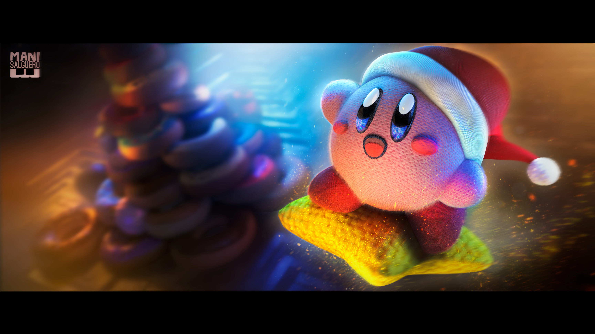

Kirby's Return to Dreamland Deluxe
El duro Kirby está de vuelta para una aventura de plataformas para 4 jugadores. Copia las habilidades de los enemigos y usa su poder para atacar con una espada , blandir un látigo y flotar con una sombrilla . ¡También puedes disparar con láser con la nueva habilidad de copia de mecha que hace su debut en la serie! La fuerza adicional será útil para encontrar las piezas faltantes de la nave de Magolor , que se estrelló en el Planeta Popstar . Flota y lucha junto con amigos en el mismo sistema, donde cada jugador puede controlar a otro Kirby o a uno de los amigos icónicos de Kirby como King Dedede , Meta Knight y Bandana Waddle

Érase una vez en el planeta Pop
En un día luminoso en Dream Land , Kirby , sosteniendo una Strawberry Shortcake, está siendo perseguido por King Dedede y Bandana Waddle Dee . Meta Knight está en una colina, leyendo un libro. De repente, una grieta dimensional se abre en el cielo y una nave espacial conocida como Lor Starcutter cae al planeta . Kirby y sus amigos entran en la nave y encuentran a Magolor , quien explica que perdió partes de su nave y necesita la ayuda de Kirby para recuperarlas. Kirby está de acuerdo y él y sus amigos se embarcan en una nueva aventura. Después de que Kirby recolecta las cinco Part Spheres , Magolor las recompensa llevándolas a Halcandra . Sin embargo, cuando Kirby y la tripulación llegan, el barco es derribado por Landia , el dragón que fue responsable del primer derribo del barco. Magolor vuelve a pedir la ayuda de Kirby para derrotar al dragón, a lo que Kirby accede una vez más. Después de derrotar a Landia, la victoria de Kirby se ve truncada cuando Magolor aparece y toma la Corona Maestra . Luego se la pone, transformándolo en un ser poderoso. Luego le revela todo su plan a Kirby, y cómo lo engañó para que lo ayudara a alcanzar la Corona Maestra para poder conquistar el universo. Magolor luego se dirige a Otra Dimensión , pero Landia se recupera y ayuda a Kirby y sus amigos ofreciéndoles un viaje a través de Otra Dimensión. Kirby y sus amigos se dirigen a la grieta. Después de derribar al Cortador de Estrellas de Lor por tercera vez, Landia persigue a Magolor más adentro de Otra Dimensión, pero Magolor derriba a los cuatro dragones, lo que hace que Kirby y sus amigos caigan más profundamente en la dimensión. Kirby finalmente se enfrenta a Magolor y golpea la Corona Maestra con la Ultra Espada , pero el golpe solo desata el poder de la corona, transformando a Magolor nuevamente. Kirby derrota a Magolor nuevamente, lo que hace que la criatura corrupta se disipe, dejando a Magolor y los fragmentos de la corona cayendo en un abismo dimensional . La aparente destrucción de la Corona Maestra a manos de Kirby y sus amigos hace que Another Dimension comience a colapsar y la grieta dimensional que lleva a Popstar comienza a cerrarse. Toda esperanza parece perdida para los héroes, hasta que Lor y Landia llegan a la escena. Landia recoge a Kirby y sus amigos, mientras que Lor vuelve a abrir el portal de regreso a Popstar antes de que puedan ser tragados por el vacío invasor. De regreso a casa, Kirby y sus amigos se despiertan, contentos de ver que todos están bien, luego se despiden de Landia y Lor. Mientras tanto, Magolor, que está cayendo en picado por un abismo dimensional, tiene su magia dispersa por el reino junto con los fragmentos de la corona, dejando sus túnicas monocromáticas y hechas jirones. Magolor finalmente se despierta, habiendo sido despojado de la mayoría de sus poderes. Vaga por la Dimensión Aerogree por un tiempo, cuando de repente, es emboscado por Doomers . Después de derrotarlos, obtiene un Fragmento de Fruta . Magolor es transportado al Altar Etéreo , donde el fragmento se coloca en el petestal y le otorga a Magolor una parte de sus habilidades perdidas. Después de recolectar los cinco fragmentos, se unen para formar la Semilla de Manzana Gema . Sin embargo, antes de que Magolor pueda tomarla, los fragmentos de la Corona Maestra encuentran su camino hacia Magolor y posee la semilla, transformándose en el Doomer Coronado . Magolor derrota al Doomer Coronado, pero los fragmentos toman el control de la semilla y la transforman en un árbol gigante. Después de debilitar la corona, Magolor saca una espada de las ruinas y forja su propia Ultra Espada, que usa para acabar con la corona. Luego se abre una grieta dimensional frente a Magolor, quien ingresa. Magolor termina en la Aldea del Castillo del Reino de los Sueños , donde descubre que la Semilla de Manzana Gema se ha convertido en una pequeña plántula. Planta la plántula en la aldea, luego establece su Tienda y luego se reúne con Broom Hatter , Bandana Waddle Dee , Rick , Kine y Coo , preparando los eventos de Team Kirby Clash Deluxe y Super Kirby Clash .
.jpg)
.jpg)
.jpg)
Jugabilidad
Kirby's Return to Dream Land Deluxe es una nueva versión mejorada de Kirby's Return to Dream Land , que presenta un estilo artístico actualizado pero que en su mayoría contiene el mismo contenido que el lanzamiento original. Presenta las nuevas habilidades Mecha y Sand Copy junto con el regreso de Festival , un nuevo modo de juego titulado Magolor Epilogue: The Interdimensional Traveler que cuenta los eventos del regreso de Magolor después de la destrucción de la Master Crown y nuevos subjuegos en forma de Magolor's Tome Trackers , Booming Blasters y Samurai Kirby 100, así como otros subjuegos que regresan de entregas anteriores de la serie que se pueden encontrar en el nuevo parque temático Merry Magoland . El juego parece utilizar un diseño basado en una historia más emergente que se vio anteriormente en uno de los prototipos de Kirby GCN . El juego presenta un nuevo objeto coleccionable en forma de máscaras de disfraces . Estas se recolectan en Merry Magoland a través de las recompensas de Stamp Rally , que se obtienen al jugar subjuegos. Hay 86 máscaras para recolectar en total. Algunas de las máscaras son solo cosméticas, mientras que otras cambian las líneas de voz del personaje del jugador. Algunas máscaras también brindan mejoras a ataques particulares. El jugador también puede recibir artículos de recuerdo obtenidos de Merry Magoland a través de las recompensas de Stamp Rally. Los artículos de recuerdo son una variedad de artículos a los que se puede acceder conBotón Arriba con Joy-Con de ladopara ayudar al jugador a progresar en el juego. Los boletos de sello también se pueden encontrar en el modo principal para que Kirby los canjee en Merry Magoland por más premios. Los jugadores tienen la opción adicional de activar la ayuda de Helper Magolor, una versión de Magolor que le proporciona a Kirby una poción de resistencia que duplica su salud, lo saca de los pozos y, ocasionalmente, proporciona Copy Essences para que Kirby las inhale.
.jpg)
.jpg)
.jpg)